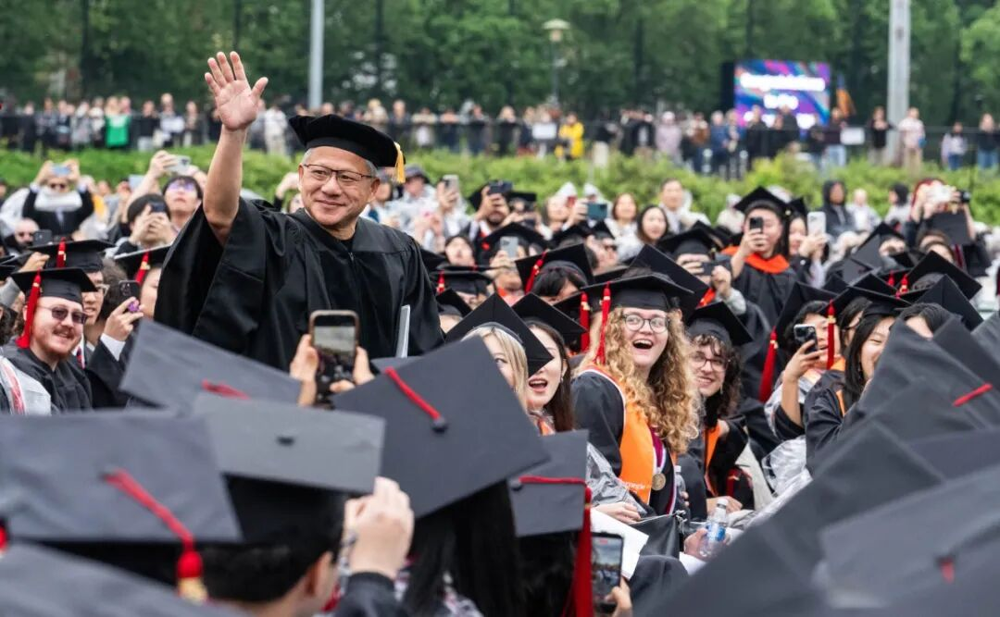
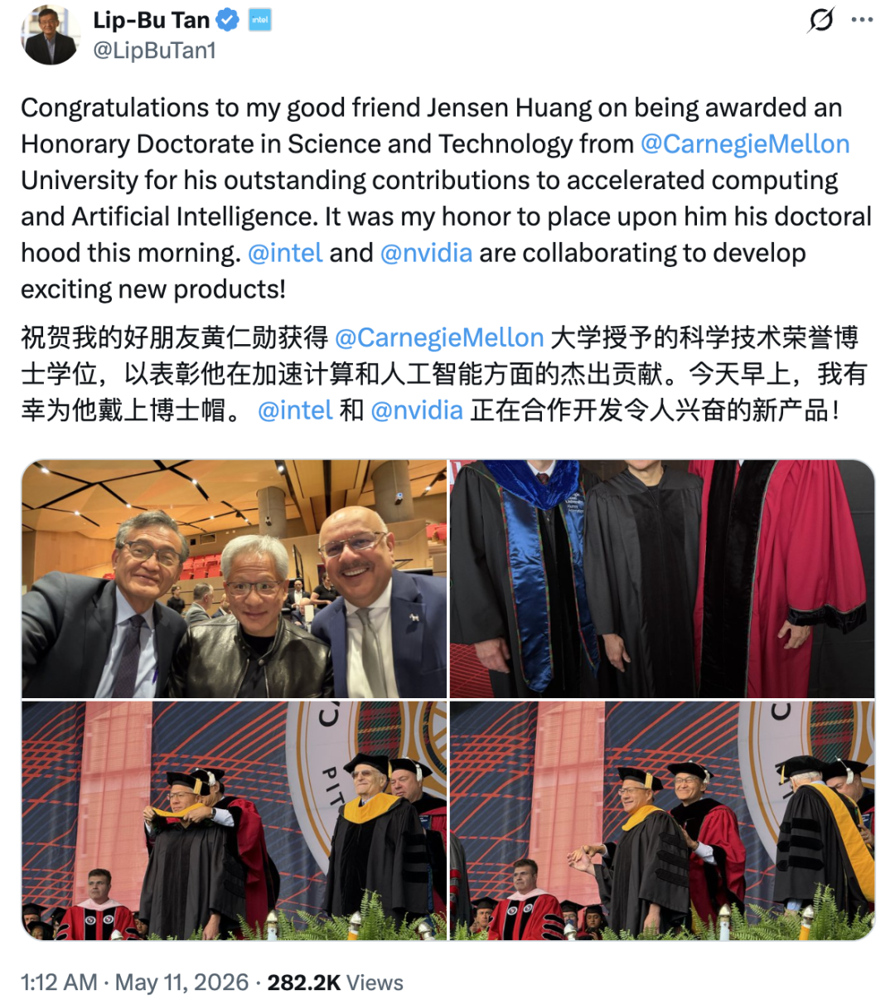
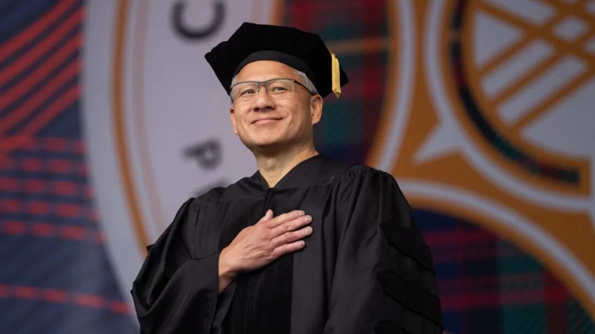
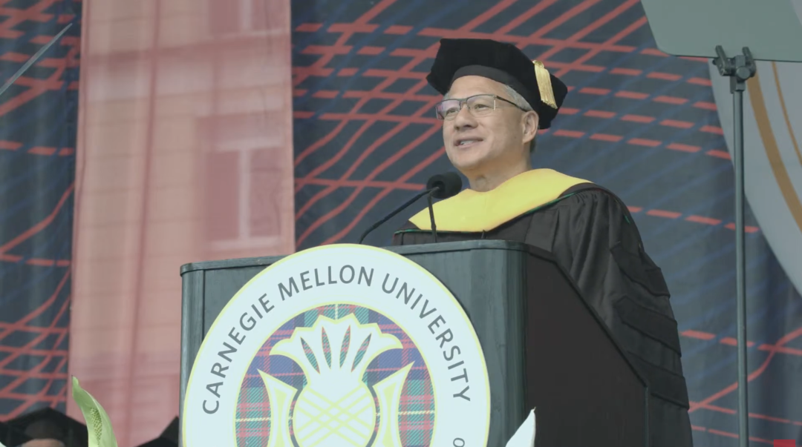
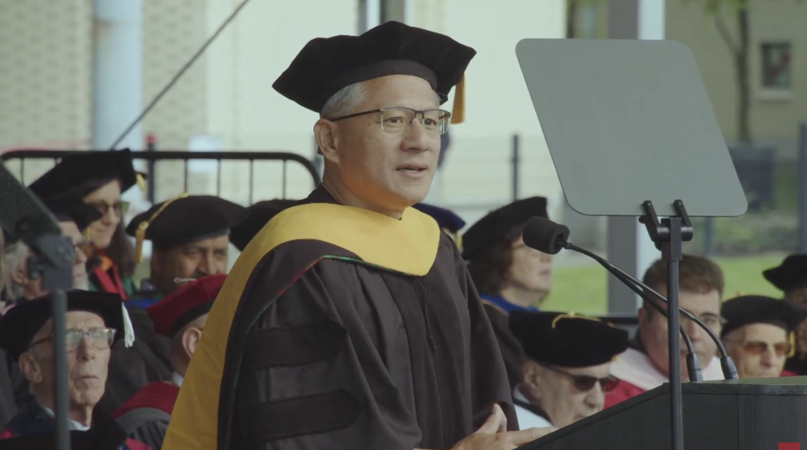
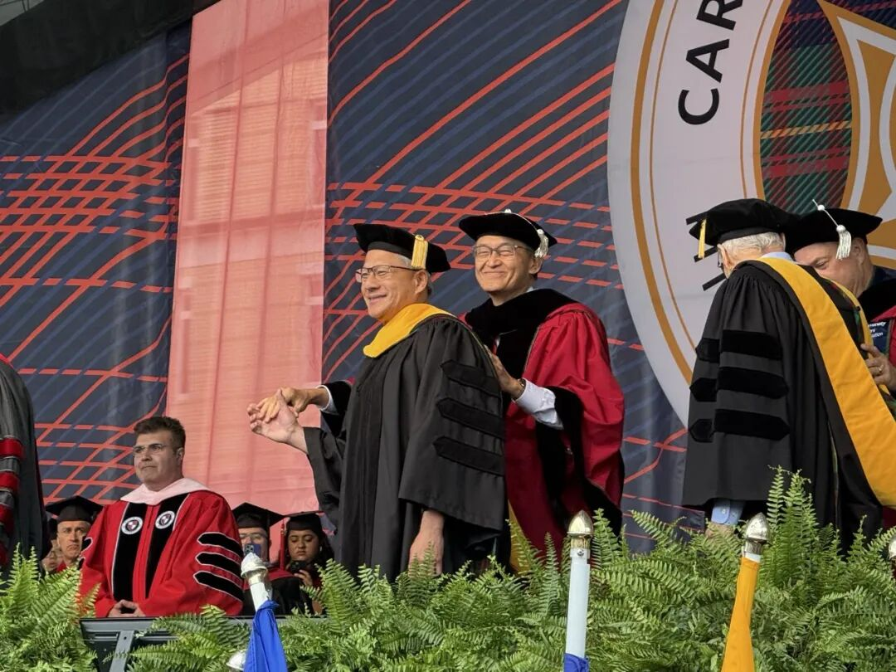
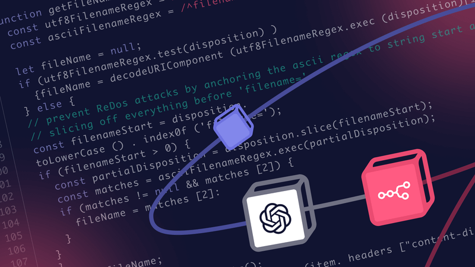

🎓 黄仁勋致 2026 届毕业生：别慌，AI 把所有人拉回同一起跑线 | 附演讲全文
Jensen Huang to 2026 Grads: Don't Panic, AI Puts Everyone on the Same Starting Line
这可能是近年来含金量最高、火药味最浓，但也最「反焦虑anxiety[æŋˈzaɪəti] n. 焦虑；渴望；挂念；令人焦虑的事」的一场毕业演讲。
就在今天，Carnegie Mellon University（CMU：卡内基梅隆大学）2026 年毕业典礼上，身价逼近 1860 亿美元的「皮衣刀客」黄仁勋站上演讲台，接过科学与技术荣誉博士学位doctorate[ˈdɑktərət] n. 博士学位;博士头衔。
台下坐着即将步入社会的 2026 届毕业生，他们面对confront[kənˈfrənt] v. 面对；遭遇；比较的世界极其割裂。一边是英伟达撑起的万亿算力computing[ˈkɒmpjuːtɪŋ] n. 算力帝国，和狂飙突进的 AI 大牛市；另一边，应届生失业率unemployment[ˌənɪmˈplɔɪmənt] n. 失业；失业率；失业人数创下新高，「AI 抢饭碗」的恐慌已经蔓延进每一个求职群。

今年，十几家大厂裁员时毫不避讳地把锅甩给了 AI；Anthropic CEO Dario Amodei 警告alarm[əˈlɑrm] v. 警告；使惊恐 AI 可能消灭 50% 的白领入门岗位；马斯克则抛出「人类有 20% 灭绝概率」的惊悚预言divine[dɪˈvaɪn] v. 占卜；预言；用占卜勘探。整个社会对 AI 的恐惧nightmare[ˈnaɪtˌmɛr] n. 恶梦；可怕的事物，无法摆脱的恐惧，正在以各种方式蔓延至这些刚拿到文凭的年轻人。
而制造这场焦虑的anxious[ˈæŋʃəs] adj. 焦虑的；担忧的；渴望的；急切的人里，有不少是和黄仁勋地位相当的 CEO。就在本月早些时候，他在一档播客里直接开炮，说这类预言「没有帮助assist[əˈsɪst] v. 协助，帮助，促进」，说这些人坐上 CEO 位置之后产生了「上帝情结」，以为自己无所不知。
批评完同行，黄仁勋今天走上了 CMU 的毕业典礼ceremony[ˈsɛrəˌmoʊni] n. 典礼,仪式；礼节,礼仪台。

值得一提的是，毕业典礼上，Intel CEO 陈立武亲手为黄仁勋披上荣誉博士披肩cape[keɪp] n. 披肩，短披风；海角，岬。典礼结束后，陈立武公开祝贺，顺手透露了一句：两家公司正在合作开发「令人期待await[əˈweɪt] v. 等候，等待；期待的新产品」。
他没有讲 AI 的宏大叙事，而是讲了自己 9 岁坐飞机去肯塔基州煤矿小镇的事，讲了凌晨 4 点被妈妈叫起来送报纸，讲了在 Denny's 洗碗，讲了向 Sega CEO 道歉apologise[əˈpɑləˌʤaɪz] v. (to,for)道歉，认错、低头哀求对方不要撤资。他说，那是他做过的「最艰难的formidable[ˌfɔrˈmɪdəbəl] adj. 强大的;令人敬畏的;可怕的;艰难的事情之一」。
从洗碗工到万亿帝国掌门人，黄仁勋在台上讲这些，显然不是为了熬一锅俗套的成功学鸡汤，而是在用自己的经历，给这群被 AI 吓坏的年轻人透个底：任何新时代epoch[ˈɛpək] n. [地质] 世；新纪元；新时代；时间上的一点的开局，其实都不是准备万全的，也不需要你一开始就无所不能。
AI 正在推翻过去几十年的计算calculate[ˈkælkjəˌleɪt] v. 计算,推算；预测，估计规则，旧的经验不再绝对管用，一切都在重新洗牌。对于刚拿到文凭、毫无包袱的年轻人youngster[ˈjəŋstər] n. 年轻人；少年来说，这其实是一件好事。因为大家不用再去死磕那些已经被前人占满的旧赛道，而是和所有人holder[ˈhoʊldər] n. 持有人；所有人；固定器；（台、架等）支持物一起，又一次站在了同一条起跑线上。
对此，他看着台下的学生表示bid[bɪd] v. 投标；出价；表示；吩咐：「把你们的心投入到工作中。去创造一些配得上你们所受教育、你们的潜力，以及那些在世界相信你们之前就已经相信你们的人的东西disguise[dɪsˈgaɪz] n. 伪装；假装；用作伪装的东西。」
https://www.youtube.com/watch?v=dRaNmHmTJzs&t=5783s

President Jehanian、董事会成员、各位老师、各位贵宾、骄傲的父母和家人们，最重要的foremost[ˈfɔrˌmoʊst] adj. 最重要的；最先的是，Carnegie Mellon 2026 届毕业生们：
感谢你们授予我这份非凡的extraordinary[ˌɛkstrəˈɔrdəˌnɛri] adj. 异乎寻常的；令人惊奇的；非凡的，出色的荣誉。能来到 Carnegie Mellon，与这所世界顶尖大学同在，我深感意义significance[sɪgˈnɪfɪkəns] n. 重要性; 意义重大。这里是少数几个真正发明contrive[kənˈtraɪv] v. 设计；发明；图谋未来的地方之一。今天是一个充满abound[əˈbaʊnd] v. 富于；充满自豪与喜悦的日子，是你们梦想成真的一天，但这一天并不只属于你们。你们的家人、老师、导师和朋友一路支持encourage[ɪnˈkərəʤ] v. 鼓励，怂恿；激励；支持你们走到这里。
在我们谈论未来之前，请先感谢gratitude[ˈgrætəˌtud] n. 感激,感谢他们。这一天也属于belong[bɪˈlɔŋ] v. 属于，应归入；居住；适宜；应被放置他们。毕业生们，请站起来，和我一起站起来。来吧，各位。尤其请转向你们的母亲，祝她们母亲节快乐delight[dɪˈlaɪt] n. 快乐,高兴。
对你们来说，这是人生中的又一步pace[peɪs] n. 一步；步速；步伐；速度。但对她来说，这是一个梦想成真的时刻。请记住这一点。

CMU 的学生就像机器人robot[ˈrəʊbɒt] n. 机器人；遥控设备，自动机械；机械般工作的人一样，一次只执行一条指令。看到你们毕业，看到你们。好了，大家集中concentrate[ˈkɑnsənˌtreɪt] v. 集中；浓缩；全神贯注；聚集注意力。我有件重要的crucial[ˈkruːʃl] adj. 重要的；决定性的；定局的；决断的事要告诉你们：看到你们从世界顶尖学府之一毕业，这也是她的时刻。我的父母也为我深感骄傲glory[ˈglɔri] v. 自豪，骄傲；狂喜。我的旅程也是他们的旅程，我是他们梦想成真的结果haul[hɔl] n. 拖，拉；用力拖拉；努力得到的结果；捕获物；一网捕获的鱼量；拖运距离，和在座许多人一样，我是第一代移民。
我父亲有一个梦想，就是在美国养育foster[ˈfɑstər] v. 培养；养育，抚育；抱（希望等）他的家庭。我 9 岁那年，他把我哥哥和我送到美国。我们最后去了肯塔基州奥奈达的一所 Baptist 寄宿学校，那里是煤矿区，一个只有几百人的小镇。两年后，我的父母放下一切来到美国和我们团聚。他们几乎practically[ˈpræktɪkəli] adv. 实际地；几乎；事实上一无所有地来到这里。
我父亲是一名化学chemistry[ˈkɛmɪstri] n. 化学；化学过程工程师。我母亲在一所天主教学校做女佣。她每天凌晨 4 点叫醒我去送报纸。我哥哥帮我在 Denny's找了一份洗碗工的工作，在当时我觉得那简直是一次重大的fatal[ˈfeɪtəl] adj. 致命的；重大的；毁灭性的；命中注定的职业晋升。
我去了 Oregon State University（俄勒冈州立大学）。17 岁那年，我遇到encounter[ɪnˈkaʊnər] v. 遇到,遭遇了我的妻子 Lori。我是学校里年龄最小的petty[ˈpɛˌti] adj. 小(器、规模)的,不重要的,细微的孩子。我们当时是大二学生，也是实验experiment[ɪkˈspɛrəmənt] n. 实验，试验；尝试课搭档。她 19 岁。
一个年长的elder[ˈɛldər] adj. 年长的；年龄较大的；资格老的女人？我击败了班上其他 250 个男生，赢得了她的心。

我们现在已经结婚marry[ˈmɛri] v. 结婚,嫁,娶 40 年了。我们有两个很棒的孩子，他们都在英伟达工作occupation[ˌɑkjəˈpeɪʃən] n. 职业,工作；占领,占据。我 30 岁时，和 Chris Malachowsky、Curtis Priem 一起创办了英伟达，他们是两位出色的计算机interface[ˈɪnərˌfeɪs] v. （使通过界面或接口）接合，连接；[计算机]使联系科学家。
我们想打造一种新型计算compute[kəmˈpjut] v. 计算；估算；用计算机计算机，一种能够解决普通计算机无法解决的问题的计算机。我们完全不知道acquaintance[əkˈweɪntəns] n. 熟人；相识；了解；知道该如何创办公司、融资，或者经营英伟达。我只是想，这能有多难？结果证明certify[ˈsərtəˌfaɪ] v. 证明，证实；发证书(或执照)给，这真的超级难。
我们的第一项技术technique[tɛkˈnik] n. 技巧，手艺，工艺；技能，技术根本行不通，钱也快用完了。有一次，我不得不飞到日本，向 Sega 的 CEO 解释，他们委托我们开发的技术无法实现，请求解除我们无法完成accomplish[əˈkɑmplɪʃ] v. 完成；实现；达到的合同，然后还请求他们继续付款。没有这笔钱，英伟达就会瞬间消失disappear[ˌdɪsəˈpɪr] v. 消失；失踪；不复存在。那非常尴尬、非常屈辱，也是我做过的最艰难的事情sensation[sɛnˈseɪʃən] n. 感觉,知觉；激动,轰动,轰动一时的事情之一。
而 Sega 的 CEO Irimajiri-san 说，可以。我很早就明白，做 CEO 不是关于权力，而是关于让公司活下去所承担assumption[əˈsəmpʃən] n. 假定，设想；采取；承担的责任；也明白了诚实和谦逊有时会得到慷慨与善意的回应，即便是在商业commerce[ˈkɑmərs] n. 买卖，贸易；商务；商业世界里。我们用那笔钱重新调整adjust[əˈʤəst] v. 调整，使…适合；校准了公司，并在绝境中发明了新的芯片和计算机设计方法，而这些方法直到今天仍在使用。
33 年来，英伟达一次又一次地重塑自己。每一次，我们都会问：这能有多难？每一次，我们又都会发现，它比我们想象的fancy[ˈfænsi] adj. 想象的；奇特的；昂贵的；精选的更难。但正是通过approve[əˈpruv] v. 批准，通过；(of)赞成，赞许，同意这些经历，我们学会了永远不要把失败看作成功的反面。每一次失败都只是一次学习的时刻，一次保持谦逊的humble[ˈhəmbəl] adj. 谦逊的；简陋的；（级别或地位）低下的；不大的时刻，一次锤炼品格的时刻。挫折中锻造出的韧性，才会给你再次出发的力量muscle[ˈməsəl] n. 肌肉；力量。今天，我是科技行业任职时间最长的 CEO 之一。

英伟达是我与 45000 位杰出同事associate[əˈsoʊʃiˌeɪt] n. 同事，伙伴；关联的事物共同完成的事业，也是我的毕生事业。现在，轮到你们去实现fulfill[fʊlˈfɪl] v. 履行；实现；满足；使结束（等于fulfil）自己的梦想了，而这个时机再完美不过。我的职业生涯开始于 PC 革命的revolutionary[ˌrɛvəˈluʃəˌnɛri] adj. 革命的；革新的开端。你们的职业生涯开始commence[kəˈmɛns] v. 开始于 AI 革命的开端。我想象不出还有比现在更令人兴奋excitement[ɪkˈsaɪtmənt] n. 兴奋；刺激；令人兴奋的事物的工作时代，更适合开启你们毕生事业的时代。AI 正是从卡内基梅隆大学起步的。
过去 24 小时里，我在这里听到了无数关于concerning[kənˈsərnɪŋ] prep. 关于；就…而言 AI 的笑话。卡内基梅隆大学是 AI 和机器人技术真正的authentic[əˈθɛnɪk] adj. 真正的，真实的；可信的发源地之一。20 世纪 50 年代，这里的研究人员创造coin[kɔɪn] v. 铸造（货币）；杜撰，创造了 Logic Theorist，它被广泛认为是第一个 AI 计算机程序。1979 年，卡内基梅隆大学成立mount[maʊnt] v. 增加；爬上；使骑上马；安装，架置；镶嵌，嵌入；准备上演；成立（军队等）了 Robotics Institute。今天上午我去参观了。今天上午，我参观了 Robo Club，也参观了第一个完全致力于机器人技术的学术机构apparatus[ˌæpərˈætəs] n. 器械，器具，仪器；机构，组织。
AI 如今已经彻底重塑了计算reckon[ˈrɛkən] v. 测算，估计；认为；计算。我经历过每一次重大的grave[greɪv] adj. 重大的；严肃的；黯淡的计算平台变革：大型机、PC、互联网、移动和云。每一波浪潮都建立在上aboard[əˈbɔrd] prep. 在…上一波之上，每一波都扩大了技术的可及性，每一波都改变了产业和社会。但现在即将发生contemporary[kənˈtɛmpərˌɛri] adj. 现代的,当代的；发生[存在]于同一时代的的变化，比以往任何一次都更大。计算正在经历suffer[ˈsəfər] v. 遭受；忍受；经历一次彻底重置。自现代计算被发明devise[dɪˈvaɪz] v. 设计;发明;图谋;作出(计划);想出(办法)以来，还从未发生过这样的变化。
60 年来，计算的工作方式一直相同：人类编写软件，计算机执行administer[ədˈmɪnɪstər] v. 管理；执行；给予指令。这个范式已经结束conclude[kənˈklud] v. 结束,终止；断定,下结论。AI 已经重塑了计算：从人类编码变成机器学习，从运行在 CPU 上的软件变成运行在 GPU 上的神经网络，从执行指令变成理解absorb[əbˈzɔrb] v. 吸收；吸引；承受；理解；使…全神贯注、推理、规划和使用工具。一个全新的产业已经出现arise[əraɪz] v. 出现；上升；起立，它的使命是大规模制造智能。
因为智能是每个行业的基础，所以consequently[ˈkɑnsəkˌwɛntli] adv. 结果，因此，所以每个行业都会发生变化。对许多人来说，AI 带来了不确定ascertain[ˌæsərˈteɪn] v. 确定，查明，弄清性。人们看到 AI 编写软件、生成图像、驾驶汽车auto[ˈɔtoʊ] n. 汽车（等于automobile）；自动，自然会想：接下来会发生什么？工作会消失flee[fli] v. 逃走；消失，消散吗？人们会被抛在后面rear[rɪr] adv. 向后；在后面吗？这项技术会不会变得过于强大？
历史上每一次重大的vital[ˈvaɪtəl] adj. 生死攸关的,重大的；生命的,生机的技术革命，都会在带来机会的同时带来恐惧。当社会以开放、负责任、乐观的optimistic[ˌɒptɪˈmɪstɪk] adj. 乐观的；乐观主义的态度拥抱技术时，我们扩展人类潜能的程度，远远超过我们削弱它的程度。所以首先，也是最重要的earnest[ˈərnɪst] adj. 认真的，热心的；重要的是，我们必须清楚地认识到：
AI 也就是对理解、推理和解决问题的自动化automation[ɔtəˈmeɪʃən] n. 自动化；自动操作，是人类有史以来创造的最强大技术之一。和此前每一项变革性技术一样，它既会带来巨大的enormous[ɪˈnɔrmɪs] adj. 庞大的，巨大的；凶暴的，极恶的希望，也会带来真实的风险。我们这一代人的责任burden[ˈbərdən] n. 负担；责任；船的载货量，不只是推进 AI，更是要明智地推进 AI。科学家scientist[ˈsaɪəntɪst] n. 科学家和工程师肩负着深刻责任，要同时推进 AI 能力和 AI 安全；政策制定establishment[ɪˈstæblɪʃmənt] n. 确立，制定；公司；设施者也是如此。
政策制定者有责任建立周全的护栏，在保护conservation[ˌkɑnsərˈveɪʃən] n. 保存，保持；保护社会的同时，仍然让创新、发现和进步继续向前。历史表明，选择逃避技术的社会并不能阻止进步，它们只是放弃abandon[əˈbændən] v. 离弃，丢弃；遗弃，抛弃；放弃了塑造进步并从中受益的机会。
所以答案不是恐惧未来，而是明智地引导未来，负责任地建设未来，并确保它带来的好处能够惠及尽可能多的人athlete[ˈæθˌlit] n. 运动员，体育家；身强力壮的人。我们不应该教人们folk[foʊk] n. 民族；人们；亲属（复数）害怕未来。我们应该以乐观、责任感和雄心ambition[æmˈbɪʃən] n. 野心，雄心；抱负，志向去参与未来。
现在，全世界只有一小部分fraction[ˈfrækʃən] n. 小部分,一点儿；分数人知道如何编写软件。而如今，任何人都可以让 AI 帮自己做出有用的东asset[ˈæˌsɛt] n. 资产， 财产；优点； 有用的东西西。一个店主可以创建网站并发展evolution[ˌɛvəˈluʃən] n. 进化,演变；发展,进展业务；一个木匠carpenter[ˈkɑrpəntər] n. 木工,木匠可以设计厨房，并向客户提供新服务。AI 会编写代码。第一次，每个人都成了程序procedure[prəˈsiʤər] n. 程序,手续,步骤员。计算和智能的力量第一次真正能够enable[ɪˈneɪbl] v. 使能够，使成为可能；授予权利或方法触达每个人，并弥合技术鸿沟。就像电力和互联网一样，AI 将需要数万亿美元的基础设施infrastructure[ˈɪnfrəstrʌktʃə] n. 基础设施；公共建设；下部构造投资。
这是人类历史上规模最大的技术基础设施建设，也是一代人只有一次的机会，让美国重新工业化industrialize[ˌɪnˈdəstriəˌlaɪz] v. 使工业化，恢复国家的建造能力。为了支持 AI，美国将在全国各地建设芯片工厂、计算机工厂、数据中心datacenter[ˈdeɪtəsentə] n. 数据中心和先进制造设施。AI 给了美国再次建设的机会occasion[əˈkeɪʒən] n. 时机，机会；场合；理由。电工、管道工、钢铁工人、技术员technician[tɛkˈnɪʃən] n. 技术员,技师,技工、建筑工人，这是你们的时代。
AI 不只是在创造invent[ˌɪnˈvɛnt] v. 发明,创造；捏造,虚构一个新的计算产业，它正在创造一个新的工业时代。支撑这些新基础设施需要巨大的gigantic[ʤaɪˈgænɪk] adj. 巨大的，庞大的能源，但它也在推动几代人以来规模最大的能源基础设施投资之一，推动电网现代化、扩大电力生产，并加速可持续能源发展。是的，AI 会改变alter[ˈɔltər] v. 改变，更改每一份工作，但一份工作的任务和目的并不是一回事。许多任务assignment[əˈsaɪnmənt] n. 任务；作业会被自动化。一些工作会消失，但许多heap[hip] n. 堆；许多；累积新的工作和全新的行业也会被创造出来。

软件编码任务正越来越多地被自动化，但借助 AI，软件工程师可以扩大amplify[ˈæmpləˌfaɪ] v. 放大，扩大；增强；详述解决方案的搜索范围，从而应对更宏大的挑战。放射影像分析analyze[ˈænəˌlaɪz] vt. 分析； 分解正越来越多地被自动化，但借助 AI，放射科医生会被提升到更高水平，更好地诊断疾病、照护患者。
AI 不会取代人的目标，它会放大人的能力capability[ˌkeɪpəˈbɪləti] n. 能力。这就是为什么即使 AI 编写了更多代码、分析了更多影像，对软件工程师和放射emit[ɪˈmɪt] v. 发出，放射；发行；发表科医生的需求仍在继续增长。AI 不太可能取代你，但更会使用 AI 的人beast[bist] n. 兽， 牲畜 ；凶残的人； 举止粗鲁的人可能会取代你。所以一个很好的思维实验是：
我们希望自己的孩子被 AI 增强，还是被那些被 AI 增强的人bore[bɔr] n. 孔；令人讨厌的人甩在后面？没有父母希望自己的孩子被落下hail[heɪl] v. 致敬；招呼；向欢呼；猛发；使像下雹样落下（过去式hailed，过去分词hailed，现在分词hailing，第三人称单数hails） int. 万岁；欢迎。所以，让我们安全safeguard[ˈseɪfˌgɑrd] n. [安全] 保护；保卫；保护措施地建设 AI。同时，也让我们想象一个乐观的未来，一个让我们的孩子愿意参与其中、并受到鼓舞去帮助boost[bust] n. 推动；帮助；宣扬建设的未来。因此accordingly[əˈkɔrdɪŋli] adv. 因此，于是；相应地；照著，我们可以也必须同时做好四件事：安全地推进 AI，制定周全的政策，让 AI 被广泛使用，并鼓励每个人参与其中。每个人都应该拥有possess[pəˈzes] v. 拥有 AI。
机会不应该只属于会写代码的人bull[bʊl] n. 公牛；看好股市者；粗壮如牛的人；胡说八道；印玺。
2026 届毕业生们，你们正进入一个非凡的remarkable[rɪˈmɑrkəbəl] adj. 值得注意的;显著的,异常的,非凡的时代。一个新的产业正在诞生，一个科学与发现discover[dɪˈskəvər] v. 发现的新时代正在开启。AI 将加速人类知识的initiate[ˌɪˈnɪʃiˌeɪt] adj. 新加入的；接受初步知识的扩展，帮助我们解决曾经无法触及的问题。我们有机会弥合技术鸿沟，第一次把计算和智能的力量带给数十亿人；有机会让美国重新工业化，恢复我们的建造construct[ˈkɑnstrəkt] v. 建造，构造；创立能力；也有机会帮助创造一个比你们所继承的世界更富足、更有能力、更充满drip[drɪp] v. 滴下；充满；漏下希望的未来。
没有任何一代人像你们这样，在进入世界时拥有如此强大的工具和如此巨大的immense[ˌɪˈmɛns] adj. 巨大的，广大的；无边无际的；非常好的机会。我们都站在同一条起跑线上。这是你们帮助facilitate[fəˈsɪləˌteɪt] v. 促进；帮助；使容易塑造未来的时刻。所以，要奔跑，不要慢走。卡内基梅隆大学有一句我很喜欢的fond[fɑnd] adj. 喜欢的；温柔的；宠爱的校训：我全身心投入工作。
所以，把你们的心投入input[ˈɪnˌpʊt] n. 投入；输入电路到工作中。去创造一些配得上你们所受教育、你们的潜力，以及那些在世界相信你们之前就已经相信你们的人的东西fifty[ˈfɪfti] n. 五十；五十个；编号为50的东西。祝贺congratulate[kənˈgræʧəˌleɪt] v. (on)祝贺,向…致贺词你们，卡内基梅隆大学 2026 届毕业生。